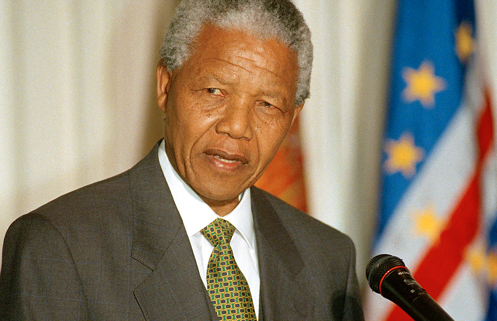

Nelson Mandela – Anti-apartheid revolutionary and South Africa’s
first Black president.
Nelson Mandela's Timeline
- 1918 – Born on July 18 in Mvezo, South Africa.
-
1941 – Moves to Johannesburg; becomes involved in anti-apartheid
politics.
- 1943 – Joins the African National Congress (ANC).
- 1944 – Co-founds the ANC Youth League.
-
1952 – Opens South Africa’s first Black law firm with Oliver Tambo;
launches the Defiance Campaign.
-
1956 – Arrested with 155 others and charged with treason (Treason
Trial, later acquitted).
-
1961 – Helps form Umkhonto we Sizwe, the armed wing of the ANC.
- 1962 – Arrested and sentenced to 5 years in prison.
-
1964 – Sentenced to life imprisonment during the Rivonia Trial.
- 1964–1990 – Imprisoned for 27 years, mostly on Robben Island.
-
1990 – Released from prison on February 11; resumes leadership of
the ANC.
- 1993 – Awarded the Nobel Peace Prize (with F.W. de Klerk).
-
1994 – Becomes South Africa’s first Black president, ending
apartheid.
-
1999 – Steps down after one term; begins humanitarian work through
the Nelson Mandela Foundation.
- 2004 – Retires from public life.
- 2013 – Passes away on December 5 at age 95.